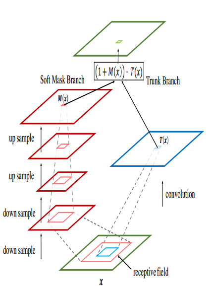

Residual Attention Network for Image Classification
- Authors: Fei Wang, Mengqing Jiang
- Link: https://arxiv.org/abs/1704.06904
- Tags:
SenseTimeAttention - Year: 2017
- Official Code: https://github.com/fwang91/residual-attention-network
Summary
- WHAT
- Attention机制不仅仅可以帮助定位, 还可以增强物体在不同位置的表达
- HOW
- Bottom-up top-down feedforward attention
- 使用类似于Stacked Hourglass 沙漏型的结构 在feature map上增加一个soft weight
- Bottem-up 结构产生了低分辨率但是强语义信息的Feature Map
- Top-Down 结构则 负责产生 高分辨率的Dense的结果
- Skip-Connect 结构来帮助信息的融合
- 由两个分支组成
- Trunk主干分支: 预激活的残差块(Resnet V2) --T(x)
- Mask分支: bottom-up top-down 结构 --和 T(x) 相同Size的 M(x)
- 最终 直接点乘
- Attention Residual Learning
- 如果只是简单的堆叠Attention模块,回导致性能的下降
- 因为 mask的值(经过sigmoid)是 0-1, 反复的乘以 这个mask 会导致 feature map的值越来越小
- soft mask 可能会 破坏 主干分支的特性
- 所以最终 $H(x) = (1+M(x)) * F(x) $ 其中 $0<M(x)<1 $
- 如果只是简单的堆叠Attention模块,回导致性能的下降
- 希望 mask能够抑制主干分支的噪声, 增强重要的特征
- Soft Mask Branch
- 使用 max-pool来降低增大感受野,双线性插值来增大分辨率 bottom-up和top-down对称
- Mask分支的主要目的还是增强 Trunk分支

- Spatial Attention and Channel Attention
- 只需要通过一个 sigmoid 就能实现最佳的效果
- 不需要 SENet那样的 仅对通道 weight或是仅对空间 weight
- Bottom-up top-down feedforward attention
- Point
The Attention Module is designed to suppress noise while keeping useful information by applying dot product between feature and soft mask.
However, repeated dot product will lead to severe degradation of both useful and useless information in this process. The attention residual learning can relieve signal attenuation using identical mapping, which enhances the feature contrast.